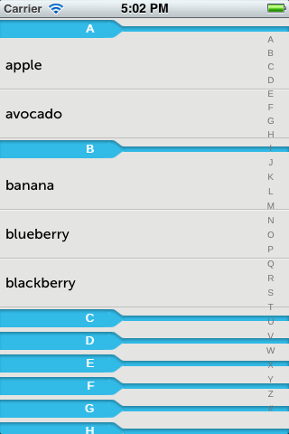
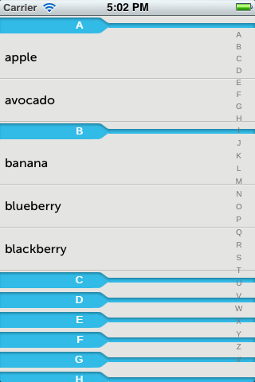
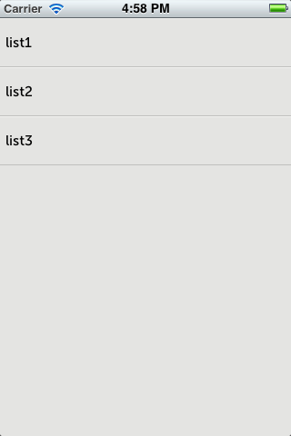
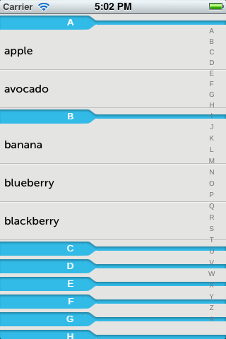

일반적으로 많이 사용하는 테이블 컴포넌트에 대해서 알아보고, 간단하게 UI를 구성하는 예를 통해 테이블 컴포넌트를 활용해 보도록 하겠습니다.
목차:
테이블 컴포넌트는 목록을 표현하는데 주로 사용됩니다. 다음은 테이블 컴포넌트가 제공하는 주요한 기능입니다.
 
이 글에서는 단순한 목록, 그룹화한 목록, 인덱스바를 적용한 예제를 통해서 Table을 살펴보도록 하겠습니다.
|
테이블 하위에 셀 컴포넌트를 추가할 수 있습니다. 셀 배열을 한꺼번에 설정할 수 있고,
var table = new tau.ui.Table({
components: [
new tau.ui.TableCell({title: 'list1'}),
new tau.ui.TableCell({title: 'list2'}),
new tau.ui.TableCell({title: 'list3'})
]
});
셀 하나씩 추가 가능합니다.
var table = new tau.ui.Table();
table.add(new tau.ui.TableCell({title: 'list1'}));
table.add(new tau.ui.TableCell({title: 'list2'}));
table.add(new tau.ui.TableCell({title: 'list3'}));
|
테이블을 그룹핑하기 위해서는 group 속성값을 true로 설정합니다.
var groupTable = new tau.ui.Table({
group: true,
sectionSort: tau.ui.DESC_SORT
});
셀은 그룹명(groupName)으로 그룹핑을 할 수 있습니다.
섹션 정렬
|
그룹화 되어 있는 셀들을 확연하게 분리되게 표현하고자 한다면 Mobello 테이블에서 다음과 같은 스타일 클래스을 제공합니다.
var groupTable = new tau.ui.Table({
group: true,
styleClass: {section: 'sectionGroup'}
});
|
그룹명(groupName)으로 지정하면 자동으로 섹션이 생성되고, 그 하위에 같은 그룹명으로 되어 있는 셀이 추가됩니다.
groupTable.add(new tau.ui.TableCell({title: 'apple', groupName: 'A'}));
groupTable.add(new tau.ui.TableCell({title: 'avocado', groupName: 'A'}));
다음과 같이 직접 섹션을 생성할 수 있습니다.
groupTable.add(new tau.ui.TableSection({groupName: 'B'}));
|
인덱스바를 적용하기 위해서는 기본적으로 테이블은 그룹핑되어 있는 테이블에서 적용이 가능합니다.
var indexTable = new tau.ui.Table({
group: true,
indexBar: tau.ui.Table.INDEXBAR_EN
});
indexbar 타입을 한글 인덱스로 설정합니다.
현재 버전(v0.9.0M) Mobello에서 인덱스바는 한글 인덱스(tau.ui.Table.INDEXBAR_KR), 영문 인덱스(tau.ui.Table.INDEXBAR_EN)를 제공합니다.
사용자가 직접 지정한 인덱스는 현재 제공하고 있지 않습니다. 해당 사항은 추후 고려하고 있습니다. |
indexTable.add(new tau.ui.TableCell({title: 'apple', groupName: 'A'}));
indexTable.add(new tau.ui.TableCell({title: 'avocado', groupName: 'A'}));